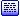

Pour sélectionner la carte carrefour utilisée pour décrire un carrefour.
 Rond point
(Alt+CTR)
Rond point
(Alt+CTR)Pour sélectionner la carte rond point utilisée pour décrire un rond point.
 Grille
(Alt+CTG)
Grille
(Alt+CTG)Pour sélectionner la carte grille utilisée pour disposer des chemins et des routes sur une grille.
 Clipart
(Alt+CTL)
Clipart
(Alt+CTL)Pour sélectionner la carte clipart utilisée pour sélectionner un clipart parmi la collection disponible.
Cap (Alt+CTP)
Pour sélectionner la carte cap utilisée pour indiquer un cap à suivre.
Heure (Alt+CTH)
Pour sélectionner la carte heure utilisée pour indiquer une direction à suivre.
 Arcs et plans
(Alt+CTA)
Arcs et plans
(Alt+CTA)Pour sélectionner la carte arcs et plans utilisée pour disposer des arcs et des plans sur un quadrillage.
 Texte (Alt+CTT)
Pour sélectionner la carte texte utilisée pour saisir un texte.
 Vectorielle
(Alt+CTV)
Vectorielle
(Alt+CTV)Pour sélectionner la carte vectorielle utilisée pour placer des droites et des courbes sur un quadrillage.
 Borne
(Alt+CTB)
Borne
(Alt+CTB)Pour sélectionner la carte borne utilisée pour disposer des bornes.
 Mille pattes
(Alt+CTM)
Mille pattes
(Alt+CTM)Pour sélectionner la carte mille pattes utilisée pour décrire un mille pattes.
 Image
(Alt+CTI)
Image
(Alt+CTI)Pour sélectionner la carte image utilisée pour afficher une image.
 Lignes de texte
(Alt+CTX)
Lignes de texte
(Alt+CTX)Pour sélectionner la carte lignes de texte utilisée pour saisir dix lignes de texte.
 Ponts
(Alt+CTO)
Ponts
(Alt+CTO)Pour sélectionner la carte ponts utilisée pour placer des ponts aux intersections.
 Villes
(Alt+CTS)
Villes
(Alt+CTS)Pour sélectionner la carte villes utilisée pour placer des panneaux d'entrée ou de sortie de ville.